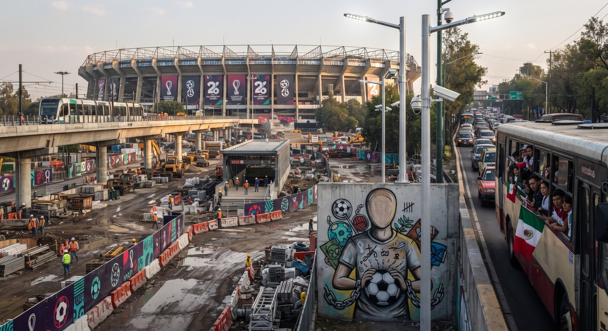

Imagen: creada con Inteligencia Artificial
El Mundial de Fútbol de la FIFA 2026 está a la vuelta de la esquina. En la Ciudad de México, se designaron desde el Poder Ejecutivo un total de 2 mil millones de pesos para la renovación y construcción de la infraestructura necesaria para recibir a los millones de visitantes que este mundial traerá, sin tomar en cuenta la inversión que se ha destinado desde otras fuentes (inversión privada, etc.).
Clara Brugada afirma que la CDMX busca recibir al torneo con “una visión profundamente igualitaria. Basada en libertades, derechos humanos y cero tolerancia a la discriminación”. La jefa de gobierno de la CDMX afirma que hará de este “el mundial más seguro”. Para lograr esto, se destinó la inversión en 344 km de “Caminos Seguros”, 185 mil luminarias nuevas, 39 mil cámaras adicionales y la adquisición de 3500 patrullas; además de la construcción y rehabilitación de 500 canchas de fútbol comunitarias.
Sin duda, todas estas acciones pueden contribuir de gran manera a la disminución de la violencia, la promoción y respeto de los derechos humanos y al largo plazo a mejorar la calidad de vida de los habitantes de la ciudad. La jefa de gobierno promete que este evento será un motor de transformación en la ciudad. Implementando el Trolebús de Chapultepec a CU. La modernización del tren ligero, recuperación de espacios públicos, la renovación de 10 rutas turísticas y la ciclovía de la Calzada de Tlalpan, entre muchas otras.
Pero, no todo es lo que parece. En lo que llevamos de 2026 ha sido difícil notar una diferencia en la seguridad de la ciudad. El número de personas desaparecidas no baja, los reportes de crímenes a mano armada siguen aumentando. Las obras han causado innumerables retrasos en las líneas del metro, inundaciones en los aeropuertos, han aumentado el tráfico de la CDMX y lo más preocupante: Todo apunta a que estas obras no estarán listas para el 11 de Junio.
Si bien, todos esos MDPs suenan muy bien y todas esas intervenciones prometen mucho. Pero en estos casos, es importante no dejarnos apantallar por el discurso político e indagar en los factores estructurales y subyacentes detrás de las cifras: ¿Cómo se pretende hacer de este “el mundial más seguro” si el 89.42% de los casos a resolver en 2024 NO recibieron una solución efectiva? ¿Cómo se garantiza la igualdad en una ciudad que por definición denota precariedad en temas de movilidad, urbanismo e infraestructura?
No se puede tener un “mundial seguro” mientras que la impunidad y la desigualdad sigan siendo parte de la normalidad cotidiana.
CIPMEX · Centro de Investigación para la Paz México, A.C. · Paz que se piensa, paz que se construye